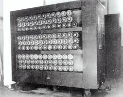

NAME : MEHMET MIRAC
SURNAME : ATICIOGLU
NUMBER :151044020
COURSE :CSE101
"Yapay zekâ" kavramının geçmişi modern bilgisayar bilimi kadar eskidir. Fikir babası, "Makineler düşünebilir mi?" sorunsalını ortaya atarak makine zekâsını tartışmaya açan Alan Mathison Turing'dir. 1943'te II. Dünya Savaşı sırasında Kripto analizi gereksinimleri ile üretilen elektromekanik cihazlar sayesinde bilgisayar bilimi ve yapay zekâ kavramları doğmuştur. Alan Turing, Nazilerin Enigma makinesinin şifre algoritmasını çözmeye çalışan matematikçilerin en ünlü olanlarından biriydi. İngiltere, Bletchley Park'ta şifre çözme amacı ile başlatılan çalışmalar, Turing'in prensiplerini oluşturduğu bilgisayar prototipleri olan Heath Robinson, Bombe Bilgisayarı ve Colossus Bilgisayarları, Boole cebirine dayanan veri işleme mantığı ile Makine Zekâsı kavramının oluşmasına sebep olmuştu. Modern bilgisayarın atası olan bu makineler ve programlama mantıkları aslında insan zekâsından ilham almışlardı. Ancak sonraları, modern bilgisayarlarımız daha çok uzman sistemler diyebileceğimiz programlar ile gündelik hayatımızın sorunlarını çözmeye yönelik kullanım alanlarında daha çok yaygınlaştılar. 1970'li yıllarda büyük bilgisayar üreticileri olan Microsoft, Apple, Xerox, IBM gibi şirketler kişisel bilgisayar (PC Personal Computer) modeli ile bilgisayarı popüler hale getirdiler ve yaygınlaştırdılar. Yapay zekâ çalışmaları ise daha dar bir araştırma çevresi tarafından geliştirilmeye devam etti. Bugün, bu çalışmaları teşvik etmek amacı ile Turing'in adıyla anılan Turing Testi ABD'de Loebner ödülleri adı altında makine zekâsına sahip yazılımların üzerinde uygulanarak başarılı olan yazılımlara ödüller dağıtılmaktadır. Testin içeriği kısaca şöyledir: birbirini tanımayan birkaç insandan oluşan bir denek grubu birbirleri ile ve bir yapay zekâ diyalog sistemi ile geçerli bir süre sohbet etmektedirler. Birbirlerini yüz yüze görmeden yazışma yolu ile yapılan bu sohbet sonunda deneklere sorulan sorular ile hangi deneğin insan hangisinin makine zekâsı olduğunu saptamaları istenir. İlginçtir ki, şimdiye kadar yapılan testlerin bir kısmında makine zekâsı insan zannedilirken gerçek insanlar makine zannedilmiştir. Loebner Ödülüü kazanan yapay zekâ diyalog sistemlerinin yeryüzündeki en bilinen örneklerinden biri A.L.I.C.E'dir. Carnegie üniversitesinden Dr.Richard Wallace tarafından yazılmıştır.Bu ve benzeri yazılımlarının eleştiri toplamalarının nedeni, testin ölçümlendiği kriterlerin konuşmaya dayalı olmasından dolayı programların ağırlıklı olarak diyalog sistemi (chatbot) olmalarıdır. Türkiye'de de makine zekâsı çalışmaları yapılmaktadır. Bu çalışmalar doğal dil işleme, uzman sistemler ve yapay sinir ağları alanlarında Üniversiteler bünyesinde ve bağımsız olarak sürdürülmektedir.Bunlardan biri, D.U.Y.G.U. - Dil Uzam Yapay Gerçek Uslamlayıcı'dır.
